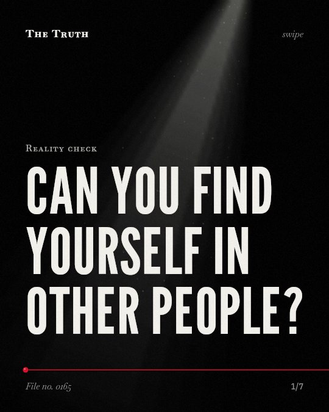

Reality check
Can you find yourself in other people?

External roles can fragment your sense of self.
Acting out more than one professional identity each day is linked to a fragmented sense of self. The evidence on the neurological impossibility of finding yourself through others is mixed.
Established. Several studies combined, or official data. The evidence is mixed.
What the research found
The Strong Black Woman schema is linked to negative impacts on the mental and physical health of Black women.
“The conceptual framework itself is an anomaly, incongruently impacting both the mental and physical health of Black women”
Systematic review, 2024. Parks & Hayman, Clinical Nursing Research.
Having to act out more than one professional identity each day is linked to a fragmented sense of self for people with multiple jobs.
“scholars have emphasized that having to act out more than one professional identity promotes a fragmented sense of self for multiple jobholders”
Study, 2024. Sessions & Pychlau, Journal of Applied Psychology.
Identity control theory shows how emotions operate within an internal control system to stabilize gendered identities.
“Identity control theory is applied to show how emotions operate within an internal control system to stabilize gendered identities and perpetuate the social structure.”
Study, 2014. Carter, Social Sciences.
Self-expansion, including experience-based, competence-based, and identity-based expansion, is linked to continuous participation in virtual corporate social responsibility co-creation.
“Our findings show that self-expansion (experience-based expansion, competence-based expansion, and identity-based expansion) has a significant positive impact on continuous participation”
Observational study, 2023. Nie et al., Behavioral Sciences.
Moral identity is a robust predictor of behavior and accounts for contextual and developmental forms of moral self-identity development.
“it is a robust predictor of behavior, it accounts for contextual and and there is a plausible developmental that us to adult forms of moral self-identity development.”
Study, 2015. Lapsley, Human Development.
Identity relies on internal systems.
Your emotions operate within an internal control system to stabilize your identity. While external roles can cause health issues, your moral identity serves as a robust predictor of your behavior.
External roles may be a burden.
That may be why trying to find yourself through others leads to exhaustion. External demands can cause negative health impacts while your internal systems struggle to maintain stability.
This part is our reading of the evidence, not a finding.
The shift at the desk.
You sit at a laptop and switch from a manager to a mentor in seconds. You put on a different voice and adopt a new set of rules for an hour.
The honest summary
The evidence shows that identity is maintained through internal control systems and schemas, but external identities can cause fragmentation or health issues.
The sources do not provide a direct neurological analysis of the impossibility of finding the self through others.
Which version of you is real?
Sources
- Daniel K. Lapsley (2015). Moral Identity and Developmental Theory. Human Development. Study, cited 3,819 times.
- Ashley K. Parks, Laura Lucia Hayman (2024). Unveiling the Strong Black Woman Schema—Evolution and Impact: A Systematic Review. Clinical Nursing Research. Systematic review, cited 34 times.
- Hudson Sessions, Sophie Pychlau (2024). Self-inconsistency or self-expansion from wearing multiple hats? The daily effects of enacting multiple professional identities on work meaningfulness.. Journal of Applied Psychology. Study, cited 20 times.
- Jinjun Nie, Xiaoyi Wang, Chan Yang (2023). The Influence of Self-Expansion and Consumer Engagement on Consumers’ Continuous Participation in Virtual Corporate Social Responsibility Co-Creation. Behavioral Sciences. Observational study, cited 16 times.
- Michael Carter (2014). Gender Socialization and Identity Theory. Social Sciences. Study, cited 281 times.
Also read for this file, not quoted
- Huntjens et al. (2019). Schema therapy for Dissociative Identity Disorder (DID): rationale and study protocol.
This file was researched and drafted by software, then checked by rules a model cannot talk its way around: each quote above was matched word for word against the paper, and every number had to appear in it. How files are made.